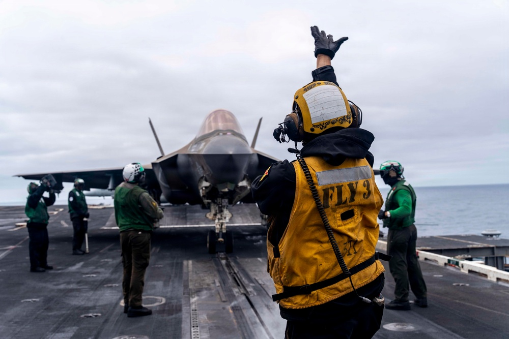

Carrier Air Wing 9 closed a 10-month combat deployment aboard Abraham Lincoln
DVIDS reported that Carrier Air Wing 9 concluded the deployment aboard USS Abraham Lincoln on Oct. 8, after embarking Nov. 21, 2025. The release says the wing flew 14,037 sorties and 31,460 flight hours, and that Operation Epic Fury, ordered Feb. 28, ran 38 days before an early April ceasefire. It says the wing expended 1,499 precision weapons, more than 1.37 million pounds of ordnance, against U.S. Central Command targets. Capt. J.W. Stigi, the wing commander, said the force destroyed Iran's conventional Navy and secured maritime chokepoints. Destroyers Spruance and Michael Murphy remain underway in the 7th and 5th Fleets. The still shows an F-35C from Marine Fighter Attack Squadron 314 on the flight deck Oct. 1, while the ship was still in the 3rd Fleet.